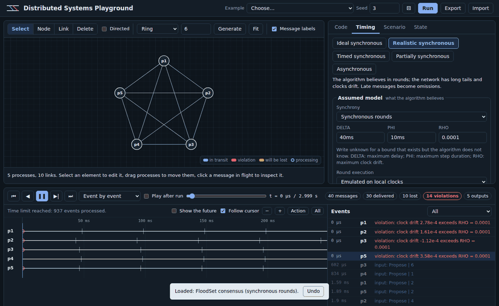
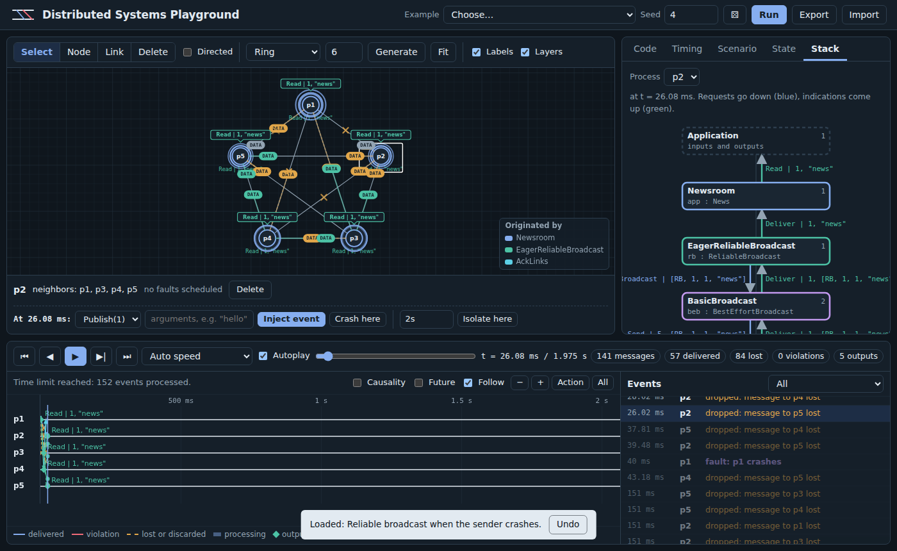
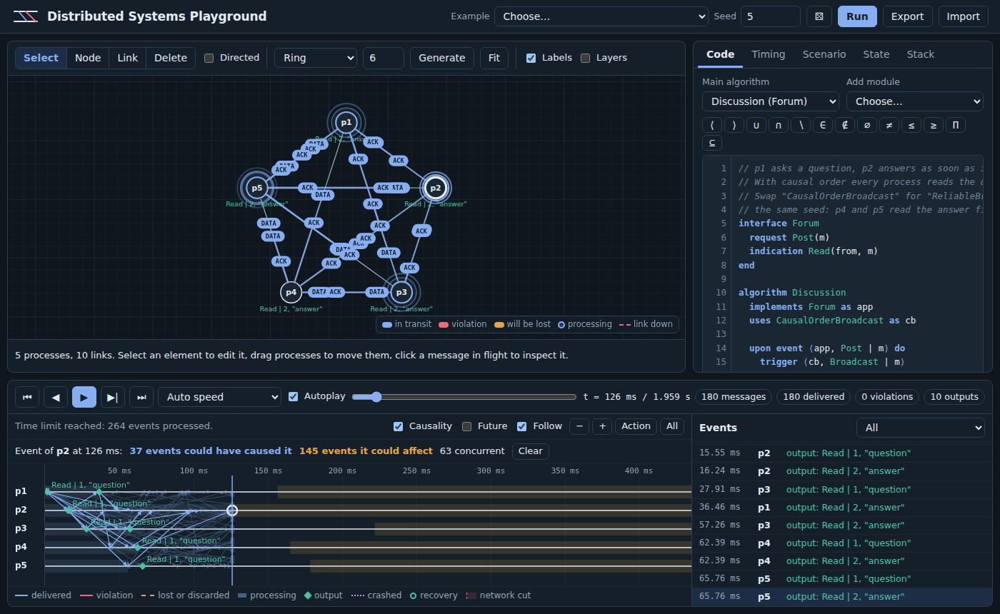

A guided tour#
Seven scenarios, in order, each showing one thing the playground is for. Open the live demo and follow along; every step takes a couple of minutes.
1. Flooding on a grid#
Load Flooding broadcast from the Example menu. Twelve processes sit on a grid; process p1 broadcasts "hello" at time 0 and p12 broadcasts "ok" 40 ms later.
- Set the speed to Event by event and press play. Each
FLOODpacket leaves its sender, moves along the link and produces a ripple when it arrives. A green bubble appears when a process delivers the message to its application. - Click a packet to pause and read its payload, send time and delay.
- Select p6 and open the State tab:
seengrows as the messages arrive. - Now open the Timing tab and set Loss to
0.3, then run again. Amber packets are the ones the network drops, and a cross marks where they disappear. The redundant paths of the grid sometimes save the broadcast and sometimes do not: with seed 7, ten processes deliver"hello"and only eight deliver"ok", while with seed 2 every process delivers both. Flooding gives no guarantee over lossy links, and the difference between seeds shows why.
2. When synchrony is only an assumption#
Load FloodSet consensus. Four processes propose random values, exchange everything they know for f + 1 = 2 rounds, and decide the minimum.
With the Ideal synchronous preset, rounds are executed in lockstep: every message of round r arrives in round r, and every process decides the same value. The dashed vertical lines on the diagram are round boundaries.
Switch to Realistic synchronous and run with the same seed (5). The algorithm still believes in rounds, but now each process opens its rounds according to its own drifting clock, and delays follow a long-tailed distribution. Messages that arrive after the recipient closed the round are discarded, as the policy says, and drawn as dashed red lines.

At the end of the run, p2 decides 7 while every other process decides 3. Nothing in the code is wrong. The algorithm was proved for a model the network did not follow, and the omissions caused by late messages exceed what FloodSet tolerates. The Timing tab shows the delay histogram and the percentage of messages that exceed DELTA, which makes the risk visible before running anything.
3. Detecting failures without a clock you can trust#
Load Failure detector ◇P. Four processes exchange heartbeats and suspect any process that does not answer before a timeout. Process p3 crashes at 6 s.
The network is partially synchronous: before GST (3 s, the amber line on the diagram) delays follow a heavy-tailed Pareto distribution, afterwards they are bounded. The algorithm does not know the bound.
- Before GST, processes suspect each other by mistake. The output bubbles show
Suspectand thenRestore. - Each mistake makes the suspecting process increase its timeout.
- After GST the mistakes stop, and after 6 s every correct process suspects p3 and only p3.
The State tab shows suspected and delay changing over time, which is the eventual accuracy property made concrete.
4. Splitting the network#
Load Failure detector across a partition and a recovery. It runs the same detector on five processes, with three scheduled faults:
- from 4 s to 7 s the network splits into {p1, p2} and {p3, p4, p5}. The links that cross the split turn into dashed red lines with a ✂ mark, and the diagram shades the interval;
- at 9 s p5 crashes, and at 11 s it recovers.
Follow the bubbles and the State tab:
- during the partition, p1 and p2 suspect {p3, p4, p5}, while p3, p4 and p5 suspect {p1, p2}. Each side sees the other as crashed, which is exactly why a partition and a crash cannot be told apart from the inside;
- after the partition heals, every suspicion is withdrawn;
- while p5 is down, every other process suspects p5 and only p5;
- when p5 recovers, its volatile state starts again from scratch and its
Inithandler restarts the heartbeats. Shortly afterwards nobody suspects anyone.
5. Changing what happened#
Pause any run, select a process or a link and use the controls in the bar under the graph:
- Crash here or Recover here stops or restarts the process at the current time.
- Isolate here cuts the process off from everyone else for the given duration, or for good if the field is empty.
- Cut here, on a selected link, takes that link down for the given duration.
- Inject event sends the process a request of the main algorithm, for example a new
Broadcast.
The simulation is recomputed and playback resumes from the same instant. Because every source of randomness is seeded per link and per process, everything before the cursor stays exactly as it was, and you can compare the two futures.
6. Following events through the stack#
Load Reliable broadcast when the sender crashes. The program is a small newsroom on top of a stack of library modules: eager reliable broadcast, best-effort broadcast and perfect links with acknowledgements. The network loses 40% of the messages, and p1 crashes 40 ms after publishing.
- Tick Layers above the graph. Packets now take the color of the module that originated them: the application's broadcast, the relays of the reliable broadcast, and the acknowledgements and retransmissions of the links. The legend on the graph lists them.
- Open the Stack tab and select p2. Each box is a module instance; blue arrows are requests going down, green arrows are indications coming up, and the numbers count the events each module has handled.
- Step through the run with Event by event. You can follow a
Deliverfrom the network up to the application, and theBroadcastthat the reliable broadcast sends back down to relay the news. - Every correct process reads the news, even though p1 crashed before its retransmissions reached p3, p4 and p5. Now edit the first algorithm, replace
uses ReliableBroadcastwithuses BestEffortBroadcast, and run again with the same seed: only p2 reads it.

7. Asking what caused what#
Load Causal order broadcast: questions before answers. p1 posts a question, p2 answers as soon as it reads it, and the channels do not preserve order.
- With causal order broadcast, every process reads the question before the answer.
- Replace
uses CausalOrderBroadcastwithuses ReliableBroadcastand run again with the same seed: p4 and p5 read the answer first. - Tick Causality above the diagram and click an event, for example p2 reading the question. Blue shading marks the part of every process's history that could have caused it, amber shading the part it could affect, and unrelated messages fade out. During playback the graph marks the processes that the event has already reached.

Where to go next#
- The Upon language to write your own algorithm.
- Examples for the other scenarios, each with experiments to try.
- Faults and Running scenarios outside the browser to ask whether an algorithm holds in general.